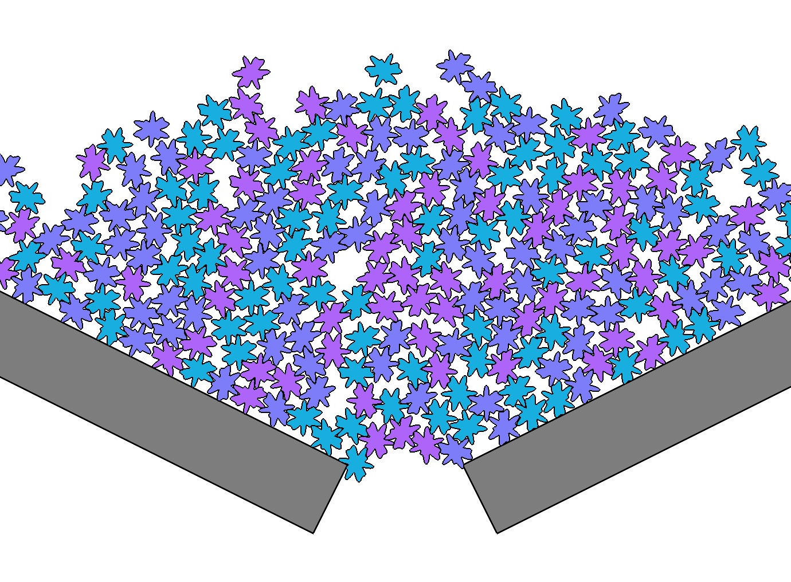
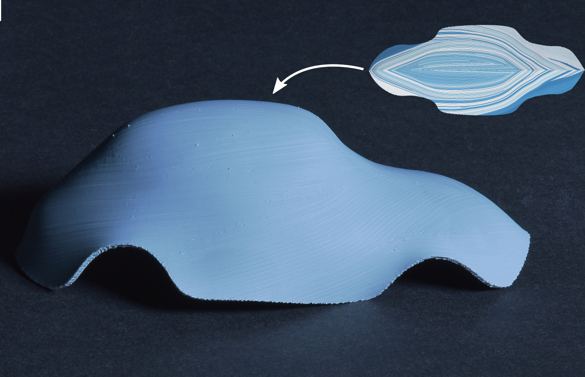
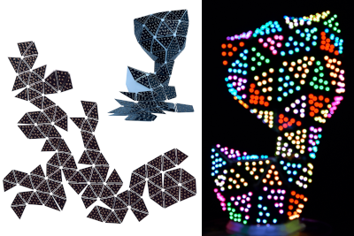
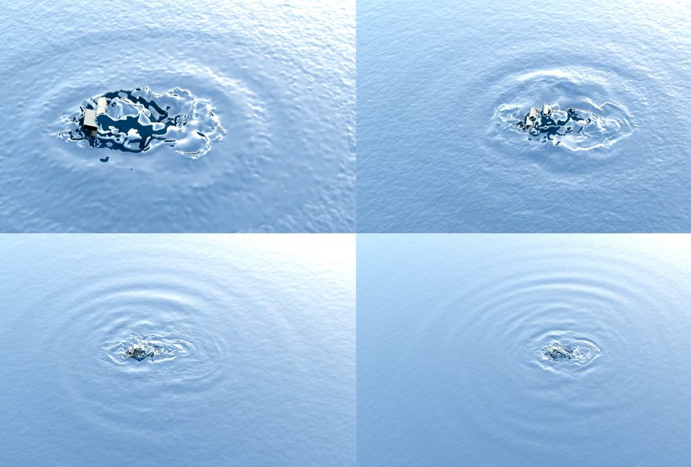

I am a researcher in Computer Graphics. I am currently conducting my research at Inria Nancy in the MFX Team where I occupy an Inria Starting Faculty Position (ISFP).
I am interested in physics-based simulation and modeling natural phenomena as well as geometric modeling.
Between 2016 and 2020, I did a postdoc at IST Austria in Chris Wojtan Group. I obtained my PhD in 2016 at the University of Grenoble-Alpes, supervised by Stefanie Hahmann and Damien Rohmer of the Imagine Team. I got an Engenieering Degree in 2013 from the school ENSIMAG (Grenoble INP) of Grenoble, France.
Go To Top
Community
Program committees
Eurographics 2024, short papers
Journées Françaises d’Informatique Graphique 2023
Siggraph Asia 2023, Technical Communications and Posters
Shape Modeling International 2023
Eurographics 2023, short papers
Journées Françaises d’Informatique Graphique 2022
Siggraph Asia 2022, Technical Communications and Posters
Pacific Graphics 2022
Shape Modeling International 2022
Journées Françaises d’Informatique Graphique 2021
Shape Modeling International 2021
Shape Modeling International 2018
Reviewer
Siggraph, Siggraph Asia, Eurographics, Computer Graphics Forum, Shape Modeling International, Pacific Graphics
Go To Top
Publications

StarDEM: efficient discrete element method for star-shaped particles
Camille Schreck, Sylvain Lefebvre, David Jourdan, Jonàs Martínez.
Eurographics 2024 - Short Papers
pdf video Sources

Shrink & Morph: 3D-printed self-shaping shells actuated by a shape memory effect
David Jourdan, Pierre-Alexandre Hugron, Camille Schreck, Jonàs Martínez, Sylvain Lefebvre.
SIGGRAPH Asia 2023
pdf video

PCBend: Light Up Your 3D Shapes With Foldable Circuit Boards
Marco Freire, Manas Bhargava, Camille Schreck, Pierre-Alexandre Hugron, Bernd Bickel, Sylvain Lefebvre.
ACM Transactions on Graphics (Proc. SIGGRAPH 2023)
pdf video

Coupling 3D Liquid Simulation with 2D Wave Propagation for Large Scale Water Surface Animation Using the Equivalent Sources Method
Camille Schreck, Chris Wojtan.
Computer Graphics Forum (Eurographics 2022)
pdf video
A Practical Method for Animating Anisotropic Elastoplastic Materials
Camille Schreck, Chris Wojtan.
Computer Graphics Forum (Eurographics 2020)
pdf video
Fundamental Solutions for Water Waves Animation
Camille Schreck, Christian Hafner, Chris Wojtan.
ACM Transactions on Graphics (SIGGRAPH 2019)
pdf video
Sources
Interactive paper tearing
Camille Schreck, Damien Rohmer, Stefanie Hahmann.
Computer Graphics Forum (Proceedings of Eurographics 2017)
pdf video
Real-time sound synthesis for paper material based on geometric analysis
Camille Schreck, Damien Rohmer, Doug, James, Stefanie Hahmann, Marie-Paule Cani.
ACM SIGGRAPH/Eurographics Symposium on Computer Animation (SCA'16)
Best Paper Award
pdf video
Interactive procedural simulation of paper tearing with sound
Thibault Lejemble, Amélie Fondevilla, Nicolas Durin, Thibault Blanc-Beyne, Camille Schreck, Pierre-Luc Manteaux, Paul G. Kry, Marie-Paule Cani.
8th ACM SIGGRAPH Conference on Motion in Games (MIG'15)
pdf
Non-smooth developable geometry for interactively animating paper crumpling
Camille Schreck, Damien Rohmer, Stefanie Hahmann, Marie-Paule Cani, Shuo Jim, Charlie Wang, Jean-Francis Bloch.
ACM Transactions on Graphics (2015)
pdf video
Go To Top